CHAPTER
II
Unit 4
The Downward Characters
34.
The characters for the consonants in this chapter are derived
from another elliptical figure:
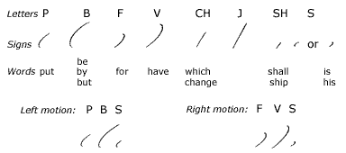
35.
All these character are written downward. Ch
is named chay, and sh is named ish. The
signs for sh and s are very small. As s
is one of the most frequent sounds in the language, two signs are
provided for it to facilitate joining in various combinations. The
following memory aids will be useful:
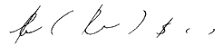
Let us have a closer look at the curve strokes left s, p, b, right s, f, and v:
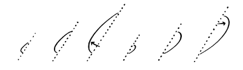
The dotted line shows the slant of the strokes as well as the relation of the beginning of the outline to the end. The deep part of the curve comes at the end of left s, p, and b; at the beginning of right s, f, and v as indicated by arrows. In your writing, observe very carefully the proportion of these strokes. B and v should span most of the space between the lines, but not all of it. The middle stokes p and f should span about half of the space between the lines. Both strokes for s only span a quarter of the space. Practice the proportions with the following sentences:
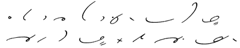
Key: He put his key by his hat. Will you have Ray get it for Lee? It is getting late.
Observe how to join a circle to these consonants with b-a, a-v; a-b, v-a:
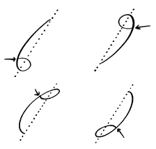
The a in b-a and a-v is fairly round; in a-b and v-a, it is more of a loop. Be sure that the a joins as indicated by the arrows and does not retrace any part of the consonant. If you turn the page upside down, b-a will look like a-v; a-v, like b-a; a-b, like v-a; and v-a, like a-b.
Let us examine how to join a circle between same-motion strokes like p and r and between k and f:
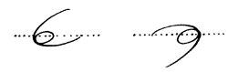
The dotted line indicates the relation of the circle to the other strokes. The circle should join so smoothly that if it were removed, the consonants would form a continuous curve. If you have written an accurate outline, when you turn your page upside down, k-a-f will look like p-a-r; p-a-r, like k-a-f.
Let us examine how to join a circle between opposite-motion strokes like f and r and like f and l:
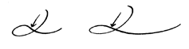
As the a is being completed, it should start to come down before it reaches the f. In other words, the r or l should be started before the circle is completed as indicated by the arrow.
Let us examine how to join a circle between very acute angles, looking at d-a-sh and sh-a-d:
The vowel here becomes a loop, or a more elongated circle. Both the sh and d are slightly extended in order to accommodate the loop. If you were to turn these outlines upside down, shade would become a perfect copy of dash, and vice versa.
Consonant Combinations
36.
Many of the consonants follow each other consecutively; for
example, r and l frequently follow p,
b, as in play, brave. As skill
in writing such combinations is essential to speed and accuracy,
the following movement drills should be practiced until fluency
is secured.
37.
Pr and Pl. In writing pr and pl,
start to the left. These combinations are written with one sweep of the pen. At the beginning of these combinations, the hand moves from the right to the left; it does not move immediately down.
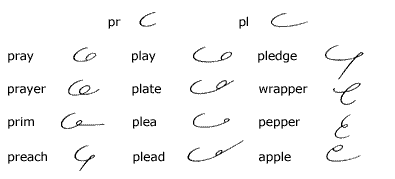
Practice with the following sentences:
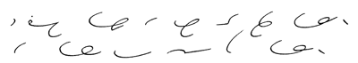
Key: His helper placed the wrapper in the paper plate. The player will come by plane.
38.
Br and Bl. In writing br and bl,
start down. These combinations are also written with one sweep of the pen. At the beginning of these combinations, the hand starts immediately down instead of to the left, as pr and pl do.
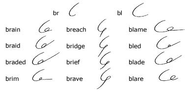
Practice with the following sentences:
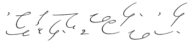
Key: His neighbor teaches members to play bridge. His bridge lesson was brief. He is not able to play well.
39.
Fr and Fl. In writing the combinations fr
and fl, the angle is rounded to give fluency. The
motion is just the same as in writing a part of the longhand y.
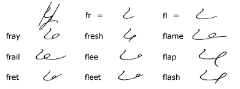
40. Frequent-Word
Drill
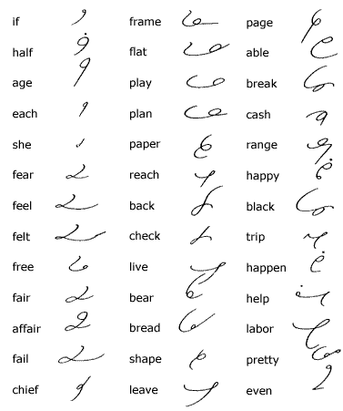
41. Brief
Forms for Common Words
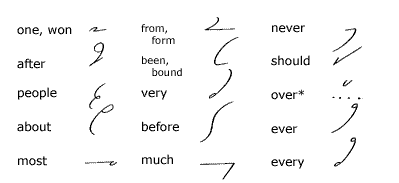
*The sign for the prefix over
written above a following character is used to express the word
over.
42.
As a prefix, after is expressed by af.
In compounds, every is expressed by ev.
43.
The word been following have, has,
had is phrased and is expressed by b:
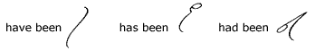
Note: The h dot in has,
had, him, himself, her, and
herself may be omitted in fast writing.
44. Business
Abbreviations
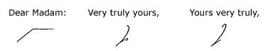
45. Reading
and Dictation Practice
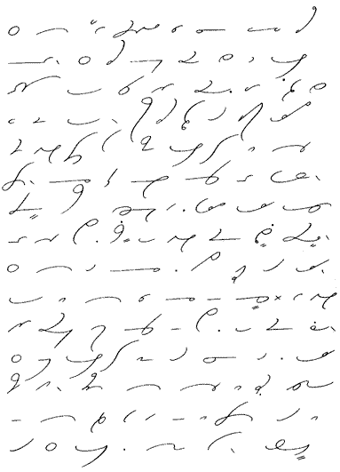
Brief Form Drill for this unit
Transcription Key to
this Unit
- Next Unit - |